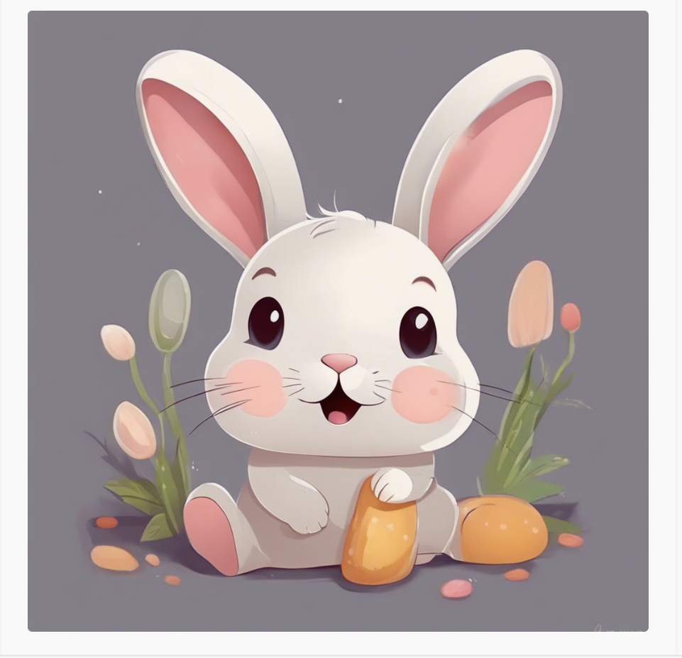

StableDifusionAPIを用いたWeb画像生成アプリ
制作期間：2023/08～2023/9末，制作人数：３人
プログラムの詳細はGithubをご参照ください．

プロダクトの概要
初めて参加したハッカソン（100program）で３人１チームで作成したものです． DjangoとStable Diffusion APIを使用したウェブサイトを開発しました． 参加したハッカソン（100program）の公式サイトは
こちら
です．もともと私が画像生成AIに興味があったため、今回の制作に至りました。
動作の様子
得られた経験・学び
-初めてのハッカソンを通して-
一番大変だったのはスケジュール管理でした。メンバーがそれぞれ関西、中部、関東地方にいたため連絡の取りづらさであったり、進捗の共有であったりが大変でした。 最終的にGithubのProjectsや週１，２回のミーティングをしていました。 テレワークの時代とは言え、離れた場所で一緒にモノづくりをすることは大変なことが多いと改めて感じました。 また、メンバーにハッカソンの経験者がいらっしゃったので、色々と助けてもらっていました。Githubの具体的な使い方やプロジェクトの進め方など、学べたことが多かったです。
-画像生成AIについて-
私は趣味でイラストを描いているため、下書きをしたり、あるいは線画をしてもらったりという事に活用したく、今回のプロジェクトのテーマに選択しました。 実際に使ってみて、精度の高さを実感できました。目的はプロンプトから生成したイラストをImage To Imageでブラッシュアップするという事だったので、そこまでは 達成できてよかったです。しかし、まだまだ調整が甘いせいで画像生成の精度が悪かったので、そこは課題として残ってしまったと感じています。